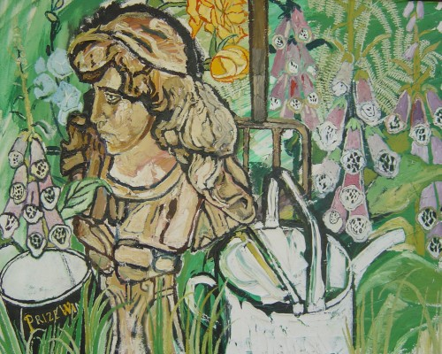

John Bratby RA
1928 – 1992
Artist Biography
Bratby was and remains a controversial artist; a founder member of the Kitchen Sink School of realist art in the 1950s, he is today described by Charles Saatchi – who devoted an entire room of his first Saatchi Gallery to Bratby – as being likely to “knock the youngsters out”. Bold images, vigour, thick paint and primary colours were Bratby’s trademarks. Bratby was born in London and studied at the Royal College of Art 1951-4. Through the 1950s Bratby regularly showed at Beaux Arts Gallery in solo exhibitions, the first being in 1954. Having won a number of scholarships in 1954, including from the Italian government, Bratby went on to teach at the Royal College of Art 1957-8. He represented Britain at the Venice Biennale both in 1956 and 1958, where on both occasions he won the Guggenheim Award. He was elected RA in 1971. Although slipping out of fashion in the latter 1960s and 1970s, his reputation recovered in part due to the championing of Julian Hartnoll. In 1991 the National Portrait Gallery held a retrospective and in the same year there was a solo show at Albemarle Gallery and the Mayor Gallery included him in the group show The Kitchen Sink Artists Revived. There was another solo show at Sue Rankin Gallery, with a retrospective at The Catto Gallery in 1997. The Tate Modern, Tate Britain, Saatchi Gallery, Museum of Modern Art New York and national galleries of Canada and New Zealand are amongst those that hold examples of his work.

Untitled